A McLarent 1963-ban alapította Bruce McLaren, egy tehetséges versenyző és mérnök, aki saját csapatot akart építeni. Több év fejlesztés után 1968-ban megszerezték első Forma 1-es győzelmüket. 1970-ben azonban tragédia történt: Bruce McLaren életét vesztette egy tesztbalesetben. A csapat ennek ellenére folytatta, és 1976-ban elérte első nagy csúcsát, amikor James Hunt egy rendkívül szezon végén, egyetlen ponttal világbajnok lett.
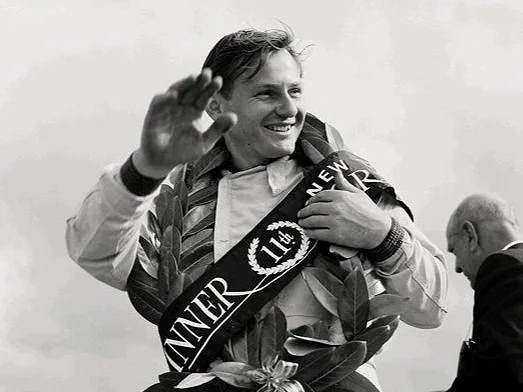
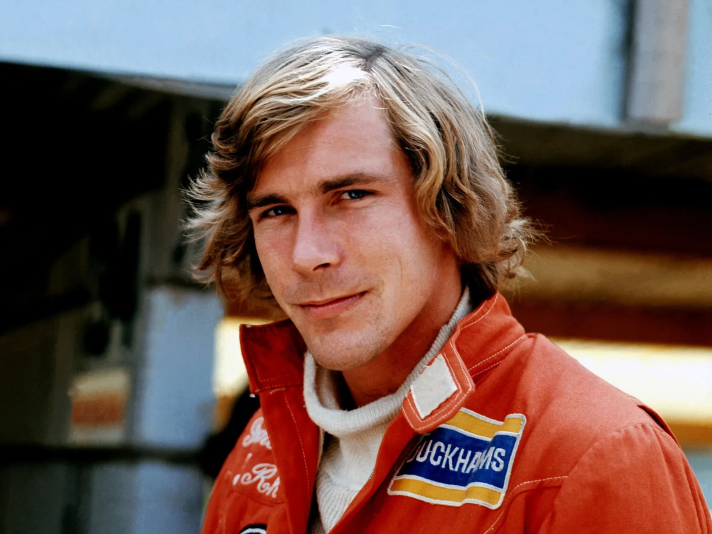
A 80-as évek közepe elhozta a McLaren aranykorát. Niki Lauda és Alain Prost vezették a sikereket: Lauda 1984-ben fél ponttal nyerte meg a bajnokságot, Prost pedig egymás után két címet szerzett. 1988 és 1991 között a csapat szinte verhetetlen volt, Ayrton Senna és Prost pedig teljesen uralták a sportot, minden egyéni világbajnoki címet megszerezve ebben az időszakban.
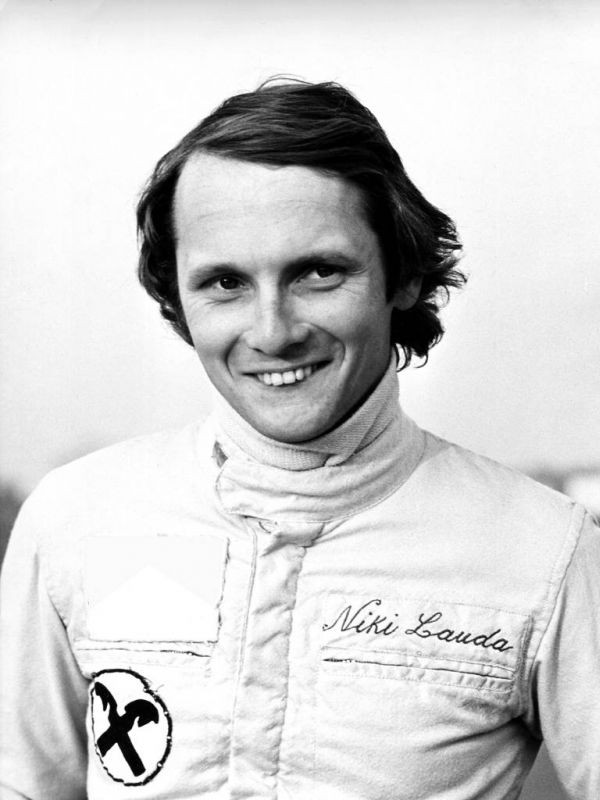
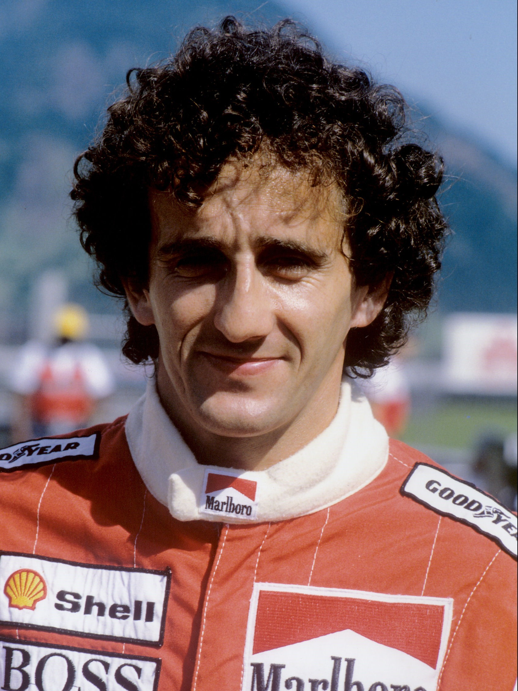
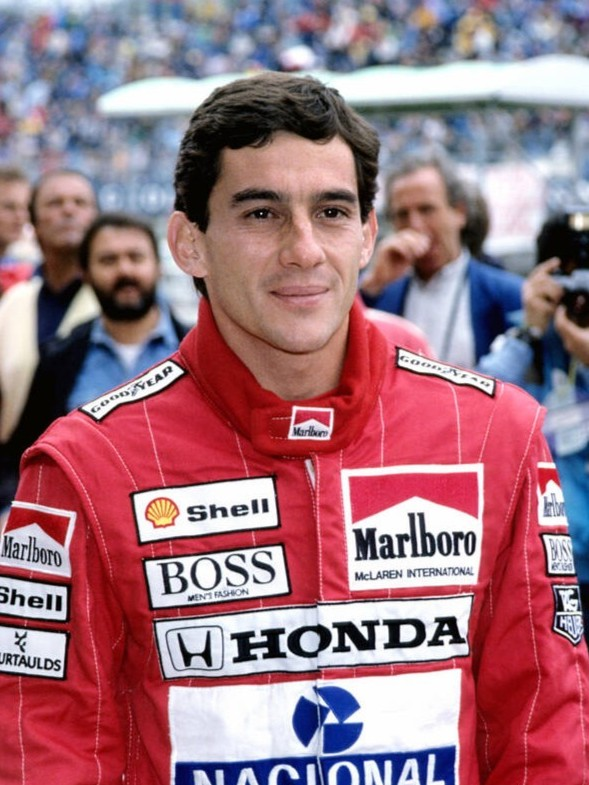
Egy visszafogottabb időszak után a McLaren Mika Häkkinen vezetésével tért vissza a csúcsra, aki 1998-ban és 1999-ben is világbajnok lett. A csapat az ezredforduló környékén is versenyképes maradt, folyamatosan a Ferrarival harcolva.
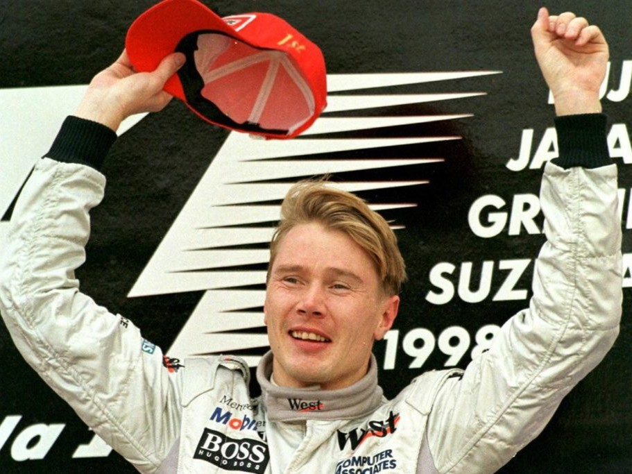
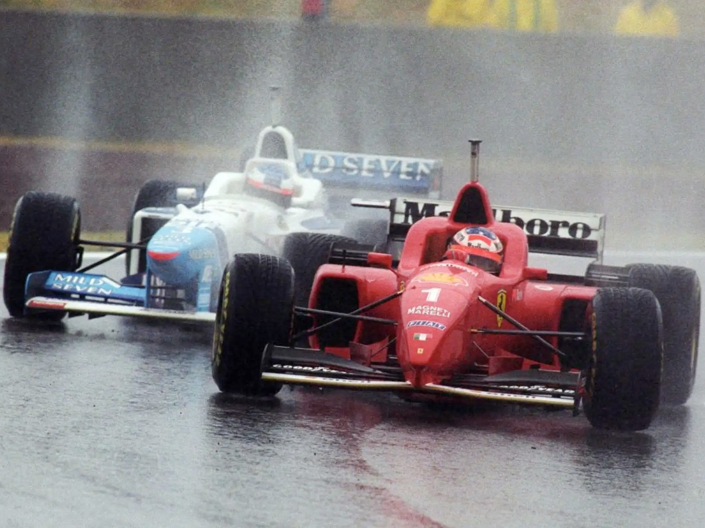
A 2000-es évek elején a McLaren gyors volt, de nem mindig megbízható. Kimi Räikkönen 2003-ban közel került a bajnoki címhez, a 2005-ös autó pedig az egyik leggyorsabb volt, de a megbízhatósági problémák sokba kerültek. A kaotikus 2007-es szezon botránnyal és elszalasztott lehetőségekkel zárult, de 2008-ban Lewis Hamilton világbajnok lett.
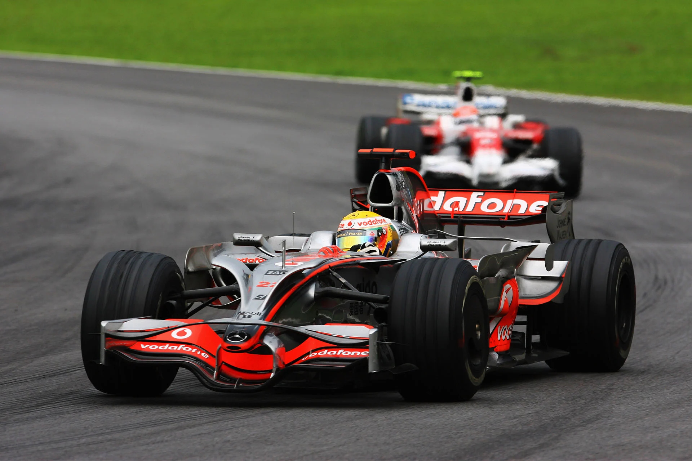
Bár voltak innovációk és alkalmi győzelmek, a McLaren fokozatosan visszaesett. A 2015-ben kezdődő Honda-korszak komoly megbízhatósági gondokat hozott, és 2017-re a csapat már messze volt az élmezőnytől.
A motorváltás segített az újjáépítésben, hiszen a Hondat a Mercedes váltotta le. 2019-re a McLaren a legjobbak közé került, majd 2020-ban összetettben a harmadik helyen végzett. A 2021-es győzelem jelezte a fejlődést, és 2023-ra Lando Norris és Oscar Piastri révén ismét rendszeres dobogósokká váltak.
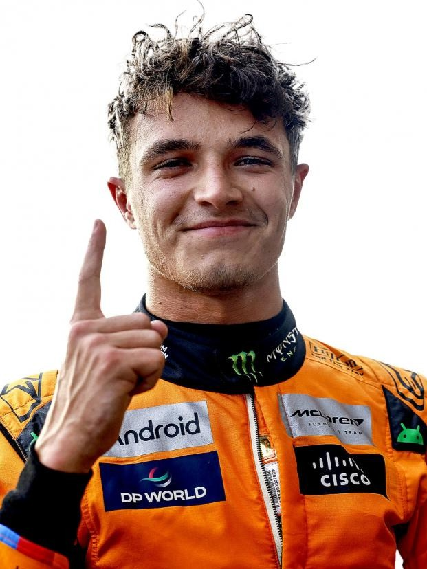
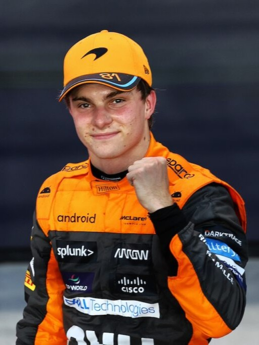
A végleges visszatérés 2024-ben következett be, amikor a McLaren megszerezte a konstruktőri világbajnoki címet, majd 2025-ben domináns teljesítménnyel megvédte azt. Lando Norris egyéni világbajnok lett, míg Piastri szintén a bajnokság élmezőnyében zárt, ezzel a csapat újra visszatért a Forma-1 élére.
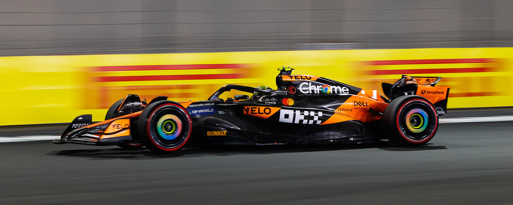
Ki volt a csapat első világbajnok pilótája?
Hány világbajnoki címet szerzett Mika Häkkinen?
Ki volt a McLaren motorpartnere 2015-ben?
A csapat egy jelenlegi pilótája: